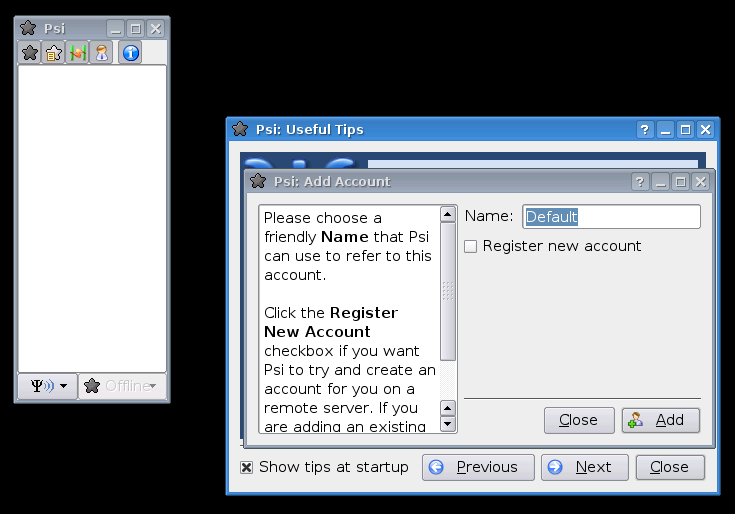
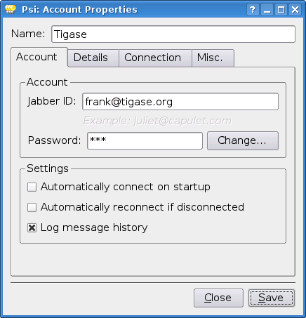
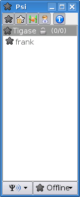
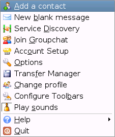
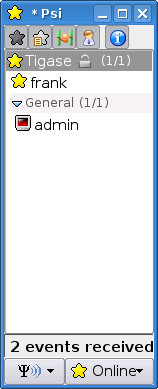
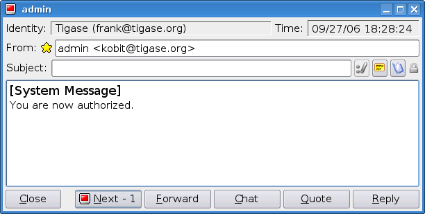
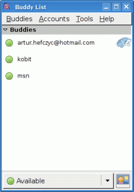
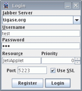
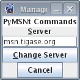
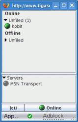

1. Jabber/XMPP introduction
Artur Hefczyc <artur.hefczyc@tigase.net> v2.0, June 2014: Reformatted for AsciiDoc. :toc: :numbered: :website: http://tigase.net :Date: 2009-11-25 15:51
1.1. Jabber/XMPP is Instant Messaging Technology
All federated Jabber/XMPP servers are connected in one global communications network allowing you to send messages to friends who have accounts on other Jabber servers.
This is very much like sending e-mail but the difference between Jabber and e-mail is the same as the difference between sending a traditional mail and talking on the phone.
All messages sent through Jabber are sent instantly and you also receive responses instantly. More over you can see whether your mate is online and available for talking or not.
There exists similar technologies to Jabber like Yahoo, MSN, and ICQ. There are, however, quite a few differences.
Jabber is an open standard which means everybody can know how it works, everybody can implement their own software connecting to the network both client and server side.
The server side is actually the biggest difference and advantage. Many companies have offices in different locations, and such instant messaging technology could be very useful to employees for communication. Companies are not inclined to allow confidential discussions to go outside the company’s network. Especially if it is not very secure to leave such information on third party public servers.
Jabber on the other hand, allows you to deploy server software on your own company network. Employees can then talk securely and all information remains on the company’s secure network. Of course if offices are located in different locations or countries then all messages are transmitted over the public network - the Internet. This is not a problem since Jabber supports SSL/TLS - secure encrypted connections which helps you protect your discussion.
Then if your employees need to contact customers outside your company, the whole discussion can go through your server and a server located on the customer side.
There are many other scenarios and use cases but I hope this brief introduction gives you an idea of the differences and advantages of Jabber technology.
2. Installing Minichat on Your Website
Artur Hefczyc <artur.hefczyc@tigase.net> v2.0, June 2014: Reformatted for AsciiDoc. :toc: :numbered: :website: http://tigase.net :Date: 2009-11-25 15:51
We have made Minichat available to demonstrate new projects we are working on, to run some tests, and collect your opinions. The feedback we’ve recieved has exceeded our expectations. The most common question was: Can I/how can I install this on my website?
Installing Minichat on your website is very simple so I am providing instructions here for all of you that want to include the Minichat client on your website and allow visitors to chat with you.
Just to remind you - this code is under development and will be updated and changed frequently. It may even stop working temporarily or permanently. We can and will intentionally block certain users or IP addresses if we discover any abuse. If you are ready for this and still want to use it continue reading…
First thing to know: Minichat will only work with the tigase.org Jabber/XMPP server right now. This is not because of some limitations in the code or special non-standard implementation. This is to simplify deployment of the service. If you wanted Minichat to connect to a different domain/Jabber server the installation would be much more difficult, involving Apaches proxy_mod installation, configuration and possibly Bosh component/server deployment.
Second thing to know: Minichat connects to the server as anonymous user. To avoid sending spam the anonymous user can only send messages to users within the single Jabber/XMPP server. It means that although you can configure Minichat to send messages to user@jabber.org, Tigase server won’t deliver those messages.
2.1. Instructions:
-
Register an account on the tigase.org website. For purposes of this guide let’s say the account name is: your-account. The Jabber ID will be: your-account@tigase.org.
Note! There seems to be some confusion so let me clarify this. You create an account on the www.tigase.org website but your Jabber account domain is: tigase.org.
-
Setup the Jabber/XMPP client of your choice to connect to the Tigase server in domain: tigase.org. Note you must allow plain text login. TLS is supported so the connection is secure and your password is still safe.
-
There are a few ways for adding the client to the website but you always use startup parameters as URL query to the client link. Following parameters are possible:
-
jid=your-account@tigase.org tells the client who you want website visitors talk to. Normally you put your own account here.
-
name=YourName screen name (displayed name) of your account.
-
domain=tigase.org domain name you want Minichat to connect to. At the moment only tigase.org is allowed.
-
autologin=true determines whether the Minichat client automatically connects to the server when the page is loaded or waits for the visitor to click on the title bar.
-
The first way described is to put the client in exactly the same way as it is on the www.tigase.org website. The chat window is always visible but the client is not connected to the server until someone clicks on the Minichat title bar. Include in your page following code:
<iframe src="http://minichat.tigase.org/MesComp.html?jid=your-account@tigase.org&name=YourName&domain=tigase.org" width="220px" height="250px" frameborder="0"></iframe>-
Very similar to the first option. The only difference is that the client automatically connects to the server and is ready for chatting without need to click on the title bar. Include following code:
<iframe src="http://minichat.tigase.org/MesComp.html?jid=your-account@tigase.org&name=YourName&domain=tigase.org&autologin=true" width="220px" height="250px" frameborder="0"></iframe> -
The third option is the least intrusive but the most complex to install. It puts a small, clickable image with text on your page: Click to chat with…. When the website visitor clicks a new window pops up with the Minichat which automatically connects to the server. You need to put some code in the web page header:
<link rel="stylesheet" type="text/css" href="http://minichat.tigase.org/minichat.css"/> <link rel="stylesheet" type="text/css" href="http://minichat.tigase.org/mygwt-all.css" />And similar to other configurations code in the web page body:
<iframe src="http://minichat.tigase.org/Runner.html?jid=your-account@tigase.org&name=YourName&domain=tigase.org" width="220px" height="250px" frameborder="0"></iframe>
-
Enjoy and send us your comments…
3. How to Use Tigase Service
Artur Hefczyc <artur.hefczyc@tigase.net> v2.0, June 2014: Reformatted for AsciiDoc. :toc: :numbered: :website: http://tigase.net :Date: 2009-11-25 15:51
3.1. This Article Describes How to use tigase.org Service for Instant Communications
You have to install and run a Jabber client application to use the service.
3.1.1. Short instructions:
Usually you just need to enter Jabber user name of the form: user@tigase.org. Your Jabber client should take care of all other things as our service doesn’t need any special settings. If you don’t have an account on tigase.org server yet just tick the option to register new account. That’s it!
3.1.2. Long Instructions:
Good news is that there are many programs to choose from which allow you to communicate through our server. So you can pick up your favorite application or use an existing one that is compatible and start using our service.
All clients presented below support multiple accounts on Jabber servers. What this means is that you can have a few Jabber accounts on different Jabber servers and you can still use just one program to connect to all of them at the same time.
Full list of all known Jabber clients is very long. You can obviously try them all but below is a selection which is recommended by Tigase team. The selected programs might not be the best choice for you but these programs have been tested and we can offer help with using them. Here is a list of recommended instant messaging clients:
-
Psi Pure Jabber client. Although it supports only Jabber network it is a very user friendly and comfortable program. It works on most popular operating systems like Linux, MS Windows, and Apple MacOS X.
-
Gajim This is another Jabber only client. Very user friendly and works on most of Linux distributions, FreeBSD, and MS Windows.
-
Pidgin (previously Gaim) This is not just a Jabber client. This type of application is called multicommunicator as apart from Jabber it supports many other instant messagin networks/protocols such as: AIM/ICQ, MSN, Yahoo, Gadu-Gadu, IRC, and a few others. So it is especially convenient if you have friends using other messaging networks. Pidgin works on most Linux distributions, and on MS Windows.
-
Kopete This is a KDE component and although it only works on Linux based system it also supports many of the most popular instant messaging protocols apart from Jabber like: AIM, Gadu-Gadu, ICQ, IRC, MSN, Yahoo.
Install the Jabber client of your choice and set up for a Tigase account.
4. Configuration Instructions for Psi
4.1. Psi - Initial Configuration
The first time you run Psi you see a screen like this:

To connect to tigase.org server we need to configure the program. Below are step-by-step instructions for novice users on how to setup Psi.
-
Psi can connect to many Jabber servers at the same time so we have to identify each connection somehow. The first thing to do is assign a name to the connection we just created. As we are going to define connection to tigase.org server let’s just name it: Tigase.

Note! At the moment you can register an account through the Web site only. This is a single account for both services: The Drupal website and Jabber/XMPP service on the tigase.org domain. If you want to have a Jabber account on the tigase.org server go to the registration page, un-tick "Register new account", and go to the point no 5. You can use guide points 2-4 to register a Jabber account on any other Jabber server.
-
When you press the Add button you will see next window where you can enter your Jabber account details:

-
Invent your user name for the account on Tigase server. Let’s assume your user name is: frank. Jabber ID’s however consist of 2 parts - your user name and server address. Exactly the same as an e-mail address. As you are registering an account on tigase.org server, you will have to enter in this field: frank@tigase.org. Next enter the password of your choice and click the Register button.

-
On successful registration you will receive a confirmation message and you should see a window like this:
It may happen that somebody earlier registered an account with the same name you’ve selected for yourself. If so, you will receive error message. You will then have to select another user name and try to register again.
-
After clicking the OK button you will see a window with your connection and account setup. You can stick with default values for now.

Just click the Save button and this window closes.
-
Now you have your account configured and ready to use but you are still off-line. You can find out whether you are on-line or off-line by looking at the bottom of main Psi window. There you can see Offline text.

Click on this Offline text and you will see a list of possible options. Just select Online.
Now you are connected!
Well, you are now connected but how to talk to other people? How to add friends to the contact list?
You can send a message to your friends stright away using the Psi menu option New blank message. It is much more convenient however, if you could see which of your friends is online and available for chatting and if you could start talking to your friend just by clicking on his name.
4.2. Short Instructions How to Add Your First Contact
-
Click on Psi menu - the button next to the Online text. You will see something like this:

From all menu options select the top one - Add a contact:

-
The next window will display where you can enter your contact details:

You have to know the Jabber ID of the person you want to add to your contact list. Let’s assume, for example, you want to add Tigase server administrator’s Jabber ID to your contact list. So, after you enter these details the window will look like this:

Click the Add button.
-
Now you will see a confirmation window that a new person has been added to your contact list:

But there is more behind the scenes. Adding a contact to your Roster (contact list) usually means you can see whether the person is online and available to talk or not. The person however, may not wish you to see his presence. So, to make sure the other person accepts you as a friend Psi sent a request to the address you just entered with the question of whether he agrees to show his presence to you.
You won’t be able to see the users availability until he sends confirmation.
-
Once the other user sends confirmation back, you will usually receive 2 system events:

-
Click on the contact to see a window with these messages:

-
One message just says you have been authorized by the other user:

So you simply click Next to see the second message.
-
The second message is a bit more interesting. It contains the question of whether you also authorize the other user to see your presence. If you want to accept this request just click Add/Auth.

-
Finally main Psi window with your new contact:

Well done!
You are ready to start Jabbering. Good luck.
Where to go next? For detailed Psi documentation refer to the program Wiki page: http://psi-im.org/wiki/Main_Page
5. Tigase Service and MSN Transport From Client Side
Artur Hefczyc <artur.hefczyc@tigase.net> v2.0, June 2014: Reformatted for AsciiDoc. :toc: :numbered: :website: http://tigase.net :Date: 2009-11-25 15:51
MSN transport is a separate module which allows you to connect to your MSN account and contact other people on the MSN network from your Jabber client. We use PyMSN-t application as a MSN transport which is a separate project from Tigase server. Both applications integrate very well and detailed configuration instructions are available in the Admin Guide.

At the moment the MSN transport installed on tigase.org server is available for local users only.
You also need an account on Hotmail’s server and a Jabber/XMPP client of your choice:
There are many other clients available…
Here are instructions on how to use the MSN transport on tigase.org with different Jabber/XMPP clients.
The first and most important thing to note is that you can not register an account on tigase.org server using your Jabber client. You have to create a new account using Tigase website. This is because Tigase website (which runs on Drupal) shares account information with the Jabber service and all account management is done via the website interface.
All Jabber/XMPP capable clients can use MSN transport as it needs very basic Jabber/XMPP protocol features. Unfortunately, some clients, especially multi-protocol clients like Pidgin don’t fully support the protocol and cannot initialize MSN transport properly. There is a workaround though. Again, using what Tigase Website offers, you can initialize MSN transport and then switch back to your favorite client.
Let’s say we have already requested a test account on Tigase website with password *** and we also have a MSN account: kobit12@hotmail.com with password: *\**\**\****.
5.1. Jeti
Jeti is described as the first client because it might be needed for users of some other clients to initialize MSN transport for your account.
Due to the number of images used in the Jeti guide it has been moved to a separate page.
5.2. Pidgin
As I mentioned earlier, Pidgin doesn’t support all Jabber extensions needed for registering to MSN transport. So unfortunately you have to use a different client to add this transport to your roster. Ideally you should use one of the native Jabber stand-alone clients like Psi, or Coccinella. However, If you don’t want to install any other clients you can use Jeti which is available on Tigase website preinstalled and preconfigured for use. Please refer to separate guide for details on how to use Jeti client to get MSN transport working.
Ok, now as you probably have MSN transport activated for you account you can start using Pidgin to communicate with either Jabber users or MSN users.
First thing to do is basic Pidgin configuration to connect to your Jabber account on tigase.org server. Click Accounts in your main menu and then Add/Edit to get to the window with all your accounts listing. There is a button Add. After you press it you get to a window as below.

Please enter all your login details as on the example screenshot. Your user name, Screen name, and Password will be different but Domain should be the same: tigase.org. After you fill in all fields don’t press Register. You have to press Save.

Ok. Assuming everything was enterred correctly and you have configured Pidgin to login automatically, your main window should look like the one on the left hand side. Your buddy list might be empty if you didn’t add anybody to your list yet or, if you didn’t register to MSN transport yet.
If MSN transport is not activated yet, please disconnect Pidgin from tigase.org server and use a different client as described above.
On the other hand if you did everything already, and you have an old MSN account with lots of contacts, your buddy list may look completely different as all the contacts you have will be automatically pulled into your Jabber roster and should show on the list.
I have created a completely new MSN account for the purpose of writing this guide and I don’t have any MSN contacts yet. So my list is quite simple - a single Jabber contact and MSN transport which shows as a normal contact. Remember Pidgin can’t distinguish between transports and regular accounts.
In such a case one of the first things I should do is add a new MSN contact to be able to communicate with somebody and see whether he/she is on-line or not.
Adding new contact is simple as long as Pidgin thinks it is normal Jabber contact. So we cannot actually enter: user_name@hotmail.com in the Add buddy window because this is a Hotmail account which is not directly available. After the @ character you have to put a valid Jabber domain, not MSN.
If you look at the image below it should become clear now.

The whole MSN account address is a user name for Jabber identifier purposes and you have to replace @ with %. Then you add @ and MSN transport address. As an alias you can use anything. I have used a real Hotmail address to make it easier later on to see what the account is.
Enter everything carefuly and press Add.
After you press the Add button the contact you are adding should receive a subscription request as well receiving a subscription request yourself. The Pidgin window should look similar to the example below.

Of course you need to press the Authorize button on both sides (or your mate on MSN network accepts your subscription request) and now the final window should look like the one below. The new buddy is on your list and you can click on his/her name and start chatting.

One final funny discovery I made during writing this guide.
I have created a new MSN account just for my tests and I have also used my old MSN account for subscribing and adding the account to buddy list on both sides. Moreover, I access both MSN accounts through MSN transport and in my tests I was communicating from one Jabber client (Psi) through MSN gateway to the MSN server and back through my MSN gateway back to other Jabber client (Pidgin) to the other account.
Apparently MSN transport spotted this and knowing how silly such a use case this is, sends me one extra message to my chat window. Have a look at the last screenshot and have fun. Remember to not communicate between 2 Jabber accounts using your 2 MSN accounts as this might be discovered by the smart, open source software.

6. Jeti and MSN Transport on tigase.org
Artur Hefczyc <artur.hefczyc@tigase.net> v2.0, June 2014: Reformatted for AsciiDoc. :toc: :numbered: :website: http://tigase.net :Date: 2009-11-25 15:51
Make sure you are not connected to the Tigase server account with another Jabber client at the same time as this may affect your transport configuration.
Jeti is available on Tigase website, preinstalled and preconfigured. You can run it by clicking on this link. Enter you user name and password to login. In my case this is test and *\**. Click *Login* and go to next page…

You are now logged in. You may see some contacts on the buddy list or an empty list if you have no contacts. You can add somebody or just start chatting, but in this guide we will focus on the MSN transport configuration.
Now click the Jeti button and select Manage Services menu option…

As a result you will get the windows with all tigase.org services.

This version of Jeti client doesn’t support service browsing yet so you have to enter the correct address of MSN transport: msn.tigase.org.
Click Change server and you will get to another window which looks like this one.

Now single click on the PyMSNt Commands text to open another window where you have to enter you MSN user name and password.

Make sure you enter your full MSN account name here including the hotmail.com part or any other domain name you use for you MSN account.
Now click OK.
Well, you clicked OK and nothing really happened. The main Jeti windows looks just as it looked before, the same. Possibly empty buddy list, and no track of MSN transport. Unfortunately this Jeti version doesn’t refresh the transport list properly and you have to re-login to see the transport. Jeti’s author is aware of this problem and it will be addressed in next release.
So please close the Jeti window and start the application again entering you Tigase user name and password.

As you can see the MSN transport is available now but it is grayed out, which means you are not logged into the MSN service.
To activate (login) to the MSN service, right click on the MSN Transport to get connect menu. Select Log On…
If everything was entered correctly, and if the MSN service is available, you should be logged into the transport and it should show in green color. All of your MSN contacts should be automatically pulled into your application.
For the Jabber client, there is now no difference between MSN contacts and Jabber contacts. So, you can simply continue to use Jeti or close it and login with another Jabber client.
You can now communicate with all people regardless if they are available through XMPP or MSN.